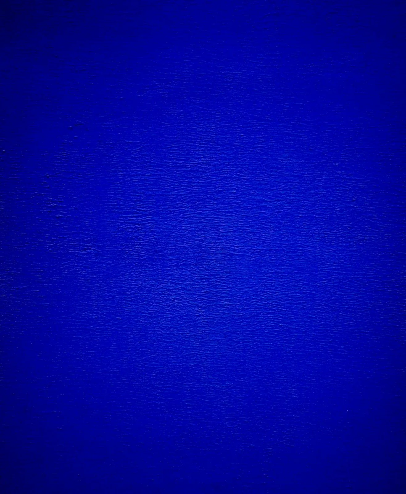

Мой любимый цвет - синий.
Мои ассоциации:
Интересный факт : синий цвет реже всего встречается в природе среди продуктов питания, поэтому он считается «подавляющим аппетит».

Информация про синий цвет в Wikipedia.